Entradas: Nombre, Apellido, Dirección, Correo Electrónico, Números
de teléfono, Palabras.
Resultados: True, en caso de error con los datos False.
Nombre: R2 - Eliminar un contacto:
Resumen: Elimina el contacto seleccionado.
Entrada: Índice del contacto seleccionado.
Resultado: True, en caso de error al eliminar el contacto o al
buscar el contacto False.
Nombre: R3 - Mostrar un contacto:
Resumen: Muestra la información de un contacto.
Entrada: Índice del contacto seleccionado.
Resultado: True, en caso de error al buscar el contacto False.
Nombre: R4 - Editar un contacto:
Resumen: Modifica la información del contacto a excepción del
nombre y el apellido.
Entrada: Nombre, Apellido, Dirección, Correo Electrónico, Números
de teléfono, Palabras.
Resultado: True, en caso de error a la hora de buscar el contacto,
o modificar nombre o apellido False.
Nombre: R5 - Mostrar todos los contactos:
Resumen: Muestra todos los contactos de la lista.
Entrada: Ninguna.
Resultado: True, en caso de error al buscar los contactos False.
Nombre: R6 - Buscar contactos por palabra clave:
Resumen: Busca todos los contactos que tengan la palabra clave
dada.
Entrada: Palabra clave.
Resultado: True, en caso de error al buscar los contactos False.
Modelo:

Código:
listaDeContactos:
__author__ = "Miguel Francisco Ruales Pianda"
__license__ = "GPL"
__version__ = "1.0"
__email__ = "miguel.rualesp@campusucc.edu.co"
from Mundo.Contacto import Contacto
class ListaDeContactos:
"""
Clase que representa una lista de contactos.
Atributos:
__contactos (list[Contacto]): Lista de contactos.
"""
def __init__(self):
"""
Inicializa una nueva lista de contactos vacía.
"""
self.__contactos = list[Contacto]()
def darTodosLosContactos(self) -> list[str]:
"""
Devuelve la lista con el nombre de todos los contactos.
Returns:
list[str]: Lista de nombres de contactos.
Si no hay contactos, devuelve una lista vacía.
"""
nombres = list[str]()
for contacto in self.__contactos:
nombres.append(contacto.darNombre() + " " + contacto.darApellido())
return nombres
def buscarContactosPalabraClave(self, palabra: str) -> list[str]:
"""
Busca contactos que contienen una palabra clave en sus palabras
y los devuelve en una lista de nombres de contactos.
Args:
palabra (str): Palabra clave a buscar.
Returns:
list[Contacto]: Lista de nombres de contactos que contienen la palabra.
Si no hay contactos que contienen la palabra, devuelve una lista vacía.
Raises:
ValueError: Si la palabra es nula o vacía.
"""
if not palabra:
raise ValueError("La palabra no puede ser nula o vacía")
contactos = list[str]()
for contacto in self.__contactos:
if contacto.contienePalabraClave(palabra):
contactos.append(contacto.darNombre() + " " + contacto.darApellido())
return contactos
def buscarContacto(self, nombre: str, apellido: str) -> Contacto:
"""
Busca un contacto por su nombre y apellido y lo devuelve.
Args:
nombre (str): Nombre del contacto a buscar.
apellido (str): Apellido del contacto a buscar.
Returns:
Contacto: Contacto encontrado o None si no se encuentra.
Raises:
ValueError: Si alguno de los parámetros es nulo o vacío.
"""
if not all([nombre, apellido]):
raise ValueError("Los parámetros no pueden ser nulos o vacíos")
for contacto in self.__contactos:
if contacto.darNombre() == nombre and contacto.darApellido() == apellido:
return contacto
return None
def agregarContacto(self, nombre: str, apellido: str, direccion: str, correo: str, telefonos: list[str], palabras: list[str]) -> bool:
"""
Agrega un contacto al listado de contactos si no hay un contacto con el mismo nombre y apellido.
Args:
nombre (str): Nombre del contacto.
apellido (str): Apellido del contacto.
direccion (str): Dirección del contacto.
correo (str): Correo electrónico del contacto.
telefonos (list[str]): Lista de teléfonos del contacto.
palabras (list[str]): Lista de palabras asociadas al contacto.
Returns:
bool: True si se agregó correctamente, False en caso contrario.
Raises:
ValueError: Si alguno de los parámetros es nulo o vacío.
"""
if not all([nombre, apellido, direccion, correo]):
raise ValueError("Los parámetros no pueden ser nulos o vacíos")
if telefonos is None or palabras is None:
raise ValueError("Los parámetros no pueden ser nulos o vacíos")
if self.buscarContacto(nombre, apellido):
return False
contacto = Contacto(nombre, apellido, direccion, correo)
for telefono in telefonos:
contacto.agregarTelefono(telefono)
for palabra in palabras:
contacto.agregarPalabra(palabra)
self.__contactos.append(contacto)
return True
def eliminarContacto(self, nombre: str, apellido: str) -> bool:
"""
Elimina un contacto basado en su nombre y apellido.
Args:
nombre (str): Nombre del contacto a eliminar.
apellido (str): Apellido del contacto a eliminar.
Returns:
bool: True si se eliminó correctamente, False en caso contrario.
Raises:
ValueError: Si alguno de los parámetros es nulo o vacío.
"""
if not all([nombre, apellido]):
raise ValueError("Los parámetros no pueden ser nulos o vacíos")
contacto = self.buscarContacto(nombre, apellido)
if not contacto:
return False
self.__contactos.remove(contacto)
return True
def modificarContacto(self, nombre: str, apellido: str, direccion: str, correo: str, telefonos: list[str], palabras: list[str]) -> bool:
"""
Modifica un contacto basado en su nombre y apellido.
Args:
nombre (str): Nombre del contacto a modificar.
apellido (str): Apellido del contacto a modificar.
direccion (str): Dirección del contacto.
correo (str): Correo electrónico del contacto.
telefonos (list[str]): Lista de teléfonos del contacto.
palabras (list[str]): Lista de palabras asociadas al contacto.
Returns:
bool: True si se modificó correctamente, False en caso contrario.
Raises:
ValueError: Si alguno de los parámetros es nulo o vacío.
"""
if not all([nombre, apellido, direccion, correo]):
raise ValueError("Los parámetros no pueden ser nulos o vacíos")
if telefonos is None or palabras is None:
raise ValueError("Los parámetros no pueden ser nulos o vacíos")
contacto = self.buscarContacto(nombre, apellido)
if not contacto:
return False
contacto.cambiarDireccion(direccion)
contacto.cambiarCorreo(correo)
self.actualizarTelefonos(telefonos, contacto)
self.actualizarPalabras(palabras, contacto)
return True
def actualizarTelefonos(self, telefonos: list[str], contacto: Contacto) -> bool:
"""
Actualiza los telefonos de un contacto
Args:
telefonos (list[str]): Lista de teléfonos del contacto.
contacto (Contacto): Contacto a actualizar.
Returns:
bool: True si se actualizó correctamente, False en caso contrario.
Raises:
ValueError: Si alguno de los parámetros es nulo o vacío.
"""
if not contacto:
raise ValueError("Los parámetros no pueden ser nulos o vacíos")
if telefonos is None:
raise ValueError("Los parámetros no pueden ser nulos o vacíos")
if not self.buscarContacto(contacto.darNombre(), contacto.darApellido()):
return False
if not contacto.darTelefonos():
for telefono in telefonos:
contacto.agregarTelefono(telefono)
return True
contacto.darTelefonos().clear()
for telefono in telefonos:
contacto.agregarTelefono(telefono)
return True
def actualizarPalabras(self, palabras: list[str], contacto: Contacto) -> bool:
"""
Actualiza las palabras clave de un contacto
Args:
palabras (list[str]): Lista de palabras clave del contacto.
contacto (Contacto): Contacto a actualizar.
Returns:
bool: True si se actualizó correctamente, False en caso contrario.
Raises:
ValueError: Si alguno de los parámetros es nulo o vacío.
"""
if not contacto:
raise ValueError("Los parámetros no pueden ser nulos o vacíos")
if palabras is None:
raise ValueError("Los parámetros no pueden ser nulos o vacíos")
if not self.buscarContacto(contacto.darNombre(), contacto.darApellido()):
return False
if not contacto.darPalabras():
for palabra in palabras:
contacto.agregarPalabra(palabra)
return True
contacto.darPalabras().clear()
for palabra in palabras:
contacto.agregarPalabra(palabra)
return True
Contacto:
__author__ = "Miguel Francisco Ruales Pianda"
__license__ = "GPL"
__version__ = "1.0"
__email__ = "miguel.rualesp@campusucc.edu.co"
class Contacto:
"""
Clase que representa un contacto.
Atributos:
__nombre (str): Nombre del contacto.
__apellido (str): Apellido del contacto.
__direccion (str): Dirección del contacto.
__correo (str): Correo electrónico del contacto.
__telefonos (list[str]): Lista de teléfonos del contacto.
__palabras (list[str]): Lista de palabras asociadas al contacto.
"""
def __init__(self, nombre: str, apellido: str, direccion: str, correo: str):
"""
Inicializa un nuevo contacto con los parámetros proporcionados.
Args:
nombre (str): Nombre del contacto.
apellido (str): Apellido del contacto.
direccion (str): Dirección del contacto.
correo (str): Correo electrónico del contacto.
Raises:
ValueError: Si alguno de los parámetros es nulo o vacío.
"""
if not all([nombre, apellido, direccion, correo]):
raise ValueError("Los parámetros no pueden ser nulos o vacíos")
self.__nombre = nombre
self.__apellido = apellido
self.__direccion = direccion
self.__correo = correo
self.__telefonos = list[str]()
self.__palabras = list[str]()
def darNombre(self) -> str:
"""
Devuelve el nombre del contacto.
Returns:
str: Nombre del contacto.
"""
return self.__nombre
def darApellido(self) -> str:
"""
Devuelve el apellido del contacto.
Returns:
str: Apellido del contacto.
"""
return self.__apellido
def darDireccion(self) -> str:
"""
Devuelve la dirección del contacto.
Returns:
str: Dirección del contacto.
"""
return self.__direccion
def darCorreo(self) -> str:
"""
Devuelve el correo electrónico del contacto.
Returns:
str: Correo electrónico del contacto.
"""
return self.__correo
def darTelefonos(self) -> list[str]:
"""
Devuelve la lista de teléfonos del contacto.
Returns:
list[str]: Lista de teléfonos.
"""
return self.__telefonos
def darPalabras(self) -> list[str]:
"""
Devuelve la lista de palabras del contacto.
Returns:
list[str]: Lista de palabras.
"""
return self.__palabras
def cambiarDireccion(self, direccion: str) -> None:
"""
Cambia la dirección del contacto.
Args:
direccion (str): Nueva dirección del contacto.
Raises:
ValueError: Si la dirección es nula o vacía.
"""
if not direccion:
raise ValueError("La dirección no puede ser nula o vacía")
self.__direccion = direccion
def cambiarCorreo(self, correo: str) -> None:
"""
Cambia el correo electrónico del contacto.
Args:
correo (str): Nuevo correo electrónico del contacto.
Raises:
ValueError: Si el correo es nulo o vacío.
"""
if not correo:
raise ValueError("El correo electrónico no puede ser nulo o vacío")
self.__correo = correo
def agregarTelefono(self, telefono: str) -> None:
"""
Agrega un teléfono al contacto si no existe en la lista.
Args:
telefono (str): Teléfono a agregar.
Raises:
ValueError: Si el teléfono es nulo o esta vacío.
"""
if not telefono:
raise ValueError("El teléfono no puede ser nulo o vacío")
if telefono not in self.__telefonos:
self.__telefonos.append(telefono)
def eliminarTelefono(self, telefonoEliminar: str) -> None:
"""
Elimina un teléfono del contacto si existe en la lista.
Args:
telefonoEliminar (str): Teléfono a eliminar.
Raises:
ValueError: Si el teléfono no existe o la lista está vacía.
"""
if not telefonoEliminar:
raise ValueError("El teléfono no puede ser nulo o vacío")
if telefonoEliminar not in self.__telefonos:
raise ValueError("El teléfono no existe en la lista")
self.__telefonos.remove(telefonoEliminar)
def agregarPalabra(self, palabra: str) -> None:
"""
Agrega una palabra clave al contacto si no existe en la lista.
Args:
palabra (str): Palabra clave a agregar.
Raises:
ValueError: Si la palabra es nula, vacía o ya existe.
"""
if not palabra:
raise ValueError("La palabra no puede ser nula o vacía")
if not self.contienePalabraClave(palabra):
self.__palabras.append(palabra)
else:
raise ValueError("La palabra ya existe en la lista")
def eliminarPalabra(self, palabraEliminar: str) -> None:
"""
Elimina una palabra clave del contacto si existe en la lista.
Args:
palabraEliminar (str): Palabra clave a eliminar.
Raises:
ValueError: Si la palabra no existe o la lista está vacía.
"""
if not palabraEliminar:
raise ValueError("La palabra no puede ser nula o vacía")
if not self.contienePalabraClave(palabraEliminar):
raise ValueError("La palabra no existe en la lista")
self.__palabras.remove(palabraEliminar)
def contienePalabraClave(self, palabra: str) -> bool:
"""
Verifica si una palabra clave existe en la lista del contacto.
Args:
palabra (str): Palabra clave a verificar.
Returns:
bool: True si la palabra existe, False en caso contrario.
Raises:
ValueError: Si la palabra es nula o vacía.
"""
if not palabra:
raise ValueError("La palabra no puede ser nula o vacía")
return palabra in self.__palabras
Main:
from Mundo.ListaDeContactos import ListaDeContactos
class Menu:
def __init__(self):
self.__miListaDeContactos = ListaDeContactos()
def mostrar_menu_principal(self):
"""
Muestra el menú principal de la aplicación.
"""
opciones = [
"1. Agregar contacto",
"2. Ver todos los contactos",
"3. Buscar contacto por palabra clave",
"4. Buscar contacto por nombre y apellido",
"5. Eliminar contacto",
"6. Modificar contacto",
"0. Salir",
]
print("\n" + "-" * 64)
print("Lista de Contactos".center(64))
print("-" * 64)
for opcion in opciones:
print(opcion)
print("-" * 64)
def menu_principal(self):
"""
Controla el flujo del menú principal.
"""
while True:
self.mostrar_menu_principal()
try:
opcion = int(input("Seleccione una opción: "))
if opcion == 0:
print("¡Hasta luego!")
break
elif opcion == 1:
self.agregar_contacto()
elif opcion == 2:
self.mostrar_todos_los_contactos()
elif opcion == 3:
self.buscar_contacto_palabra_clave()
elif opcion == 4:
self.buscar_contacto_nombre_apellido()
elif opcion == 5:
self.eliminar_contacto()
elif opcion == 6:
self.modificar_contacto()
else:
print("Opción no válida. Intente de nuevo.")
except ValueError:
print("Por favor, ingrese un número válido.")
def agregar_contacto(self):
"""
Solicita los datos para agregar un contacto nuevo.
"""
try:
datos = self.solicitar_datos_contacto()
if self.__miListaDeContactos.agregarContacto(*datos):
print("Contacto agregado con éxito.")
else:
print("No se pudo agregar el contacto.")
except Exception as e:
print(f"Error: {e}")
def mostrar_todos_los_contactos(self):
"""
Muestra todos los contactos almacenados.
"""
contactos = self.__miListaDeContactos.darTodosLosContactos()
if not contactos:
print("No hay contactos registrados.")
for contacto in contactos:
print(contacto)
def buscar_contacto_palabra_clave(self):
"""
Busca contactos por una palabra clave.
"""
palabra = input("Ingrese la palabra clave: ")
try:
contactos = self.__miListaDeContactos.buscarContactosPalabraClave(palabra)
if not contactos:
print("No se encontraron contactos con esa palabra clave.")
for contacto in contactos:
print(contacto)
except Exception as e:
print(f"Error: {e}")
def buscar_contacto_nombre_apellido(self):
"""
Busca un contacto por nombre y apellido.
"""
nombre = input("Ingrese el nombre: ")
apellido = input("Ingrese el apellido: ")
try:
contacto = self.__miListaDeContactos.buscarContacto(nombre, apellido)
if not contacto:
print("No se encontró un contacto con ese nombre y apellido.")
else:
self.mostrar_detalle_contacto(contacto)
except Exception as e:
print(f"Error: {e}")
def eliminar_contacto(self):
"""
Elimina un contacto por nombre y apellido.
"""
nombre = input("Ingrese el nombre: ")
apellido = input("Ingrese el apellido: ")
try:
if self.__miListaDeContactos.eliminarContacto(nombre, apellido):
print("Contacto eliminado con éxito.")
else:
print("No se encontró el contacto para eliminar.")
except Exception as e:
print(f"Error: {e}")
def modificar_contacto(self):
"""
Modifica los datos de un contacto.
"""
try:
datos = self.solicitar_datos_contacto()
if self.__miListaDeContactos.modificarContacto(*datos):
print("Contacto modificado con éxito.")
else:
print("No se encontró el contacto para modificar.")
except Exception as e:
print(f"Error: {e}")
def mostrar_detalle_contacto(self, contacto):
"""
Muestra los detalles de un contacto.
"""
print(f"Nombre: {contacto.darNombre()}")
print(f"Apellido: {contacto.darApellido()}")
print(f"Dirección: {contacto.darDireccion()}")
print(f"Correo: {contacto.darCorreo()}")
print(f"Teléfonos: {contacto.darTelefonos()}")
print(f"Palabras clave: {contacto.darPalabras()}")
def solicitar_datos_contacto(self):
"""
Solicita los datos necesarios para crear o modificar un contacto.
"""
nombre = input("Ingrese el nombre: ")
apellido = input("Ingrese el apellido: ")
direccion = input("Ingrese la dirección: ")
correo = input("Ingrese el correo: ")
telefonos = self.solicitar_telefonos()
palabras = self.solicitar_palabras()
return [nombre, apellido, direccion, correo, telefonos, palabras]
def solicitar_telefonos(self):
"""
Solicita una lista de teléfonos al usuario.
"""
telefonos = []
while True:
telefono = input("Ingrese un número de teléfono (o presione Enter para terminar): ")
if not telefono:
break
if telefono.isdigit():
telefonos.append(telefono)
else:
print("Por favor, ingrese un número válido.")
return telefonos
def solicitar_palabras(self):
"""
Solicita palabras clave relacionadas al contacto.
"""
palabras = []
while True:
palabra = input("Ingrese una palabra clave (o presione Enter para terminar): ")
if not palabra:
break
palabras.append(palabra)
return palabras
menu = Menu()
menu.menu_principal()